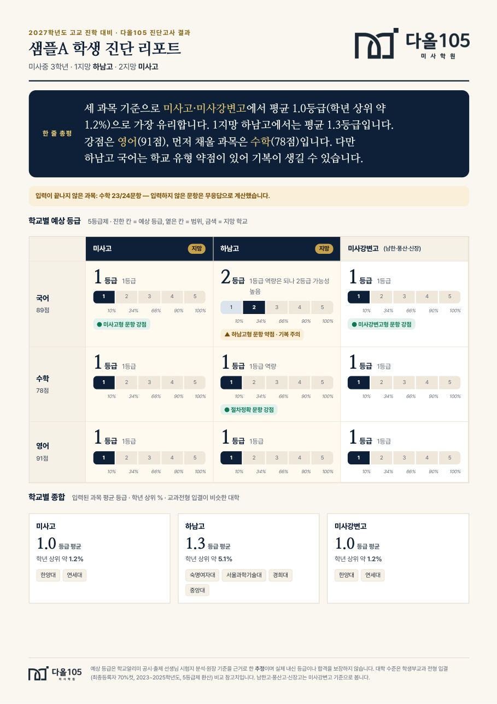
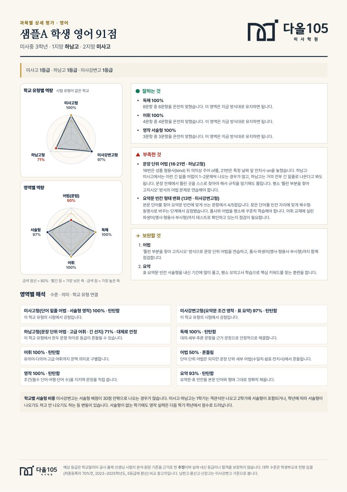
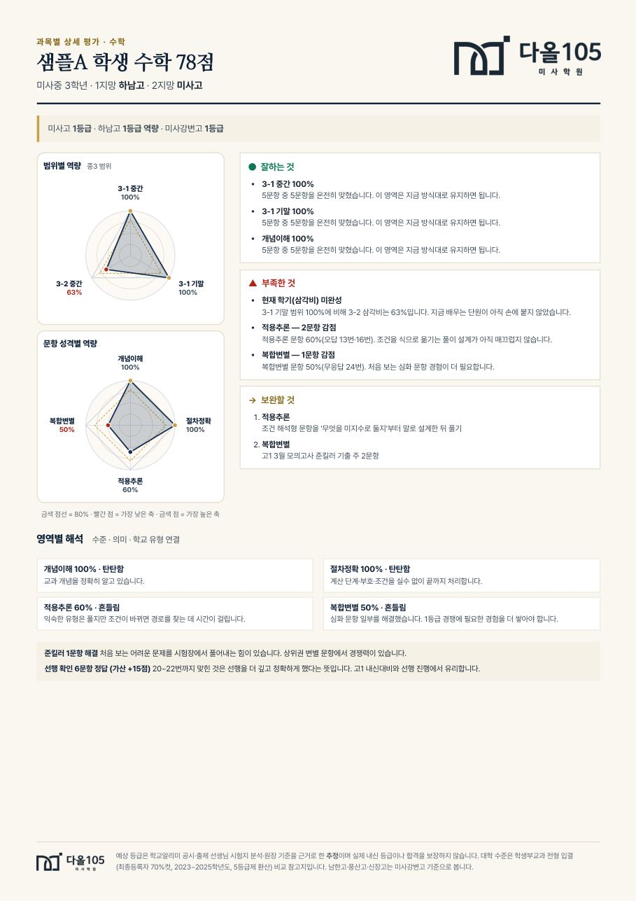
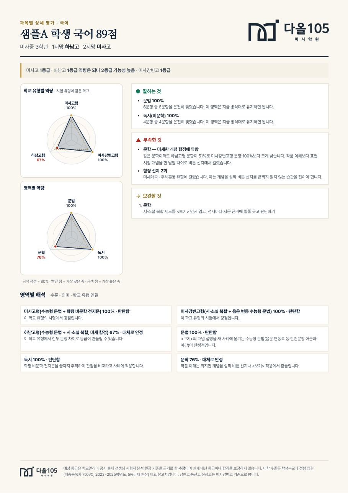
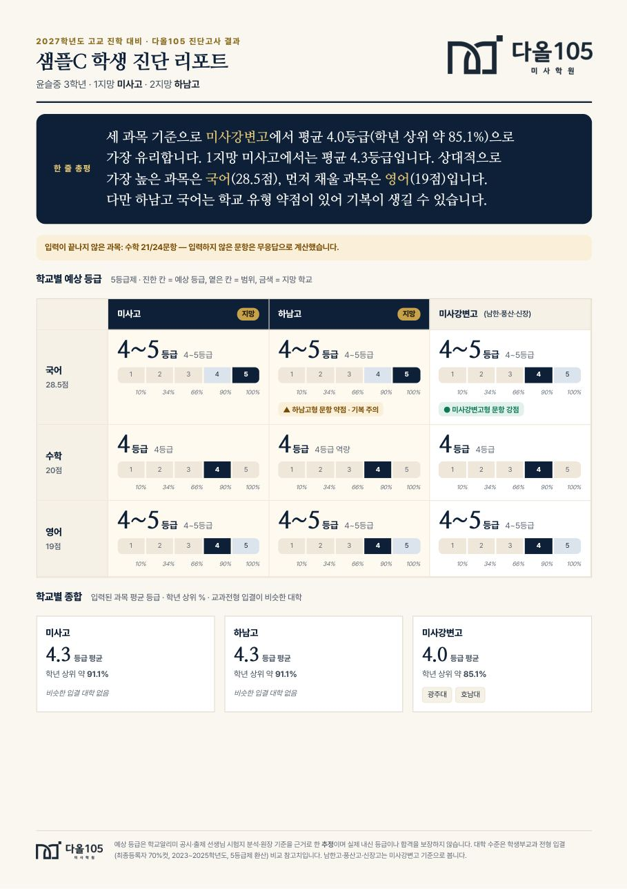
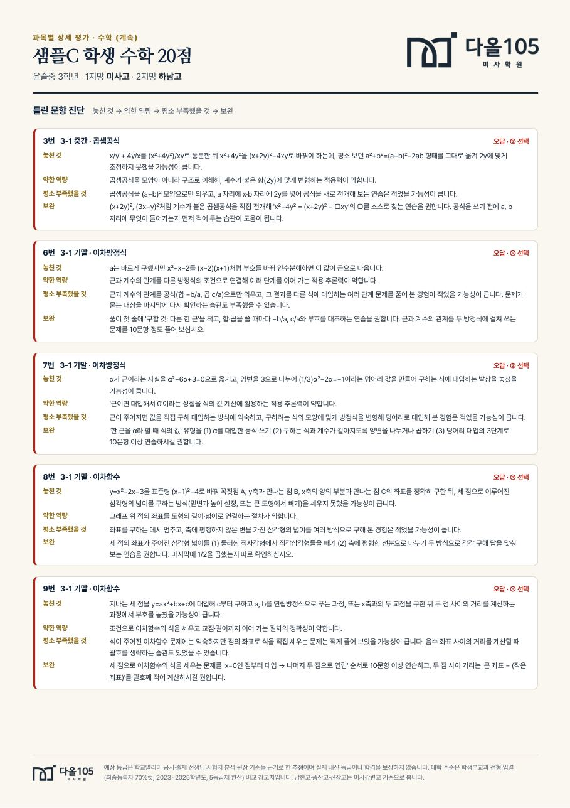
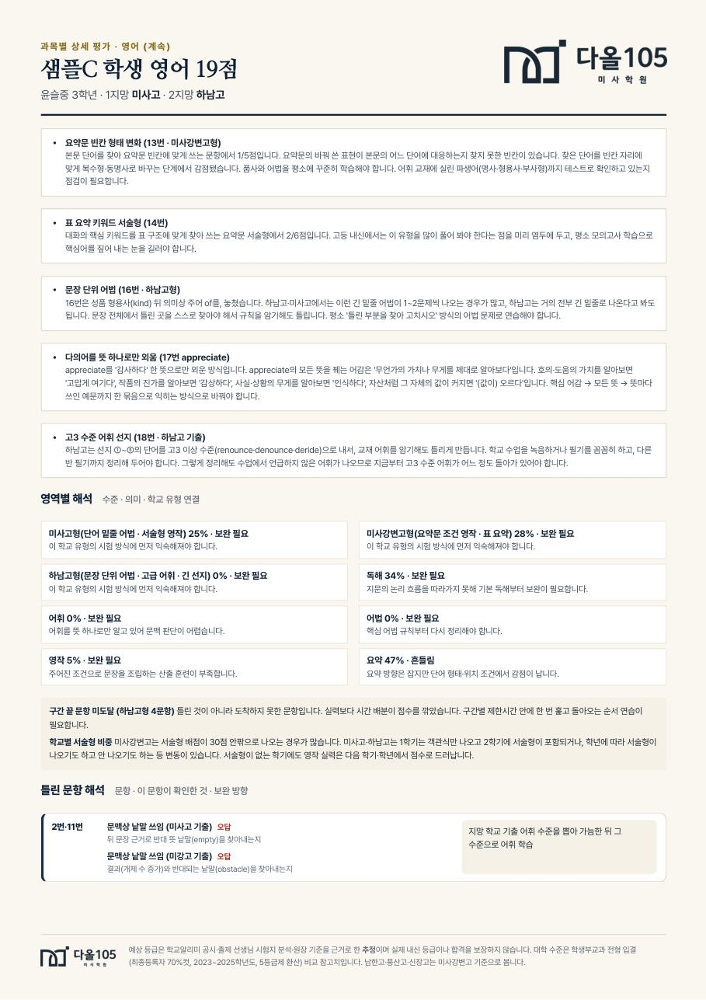

100m를 13초에 뛰는 학생이 있습니다. 기록은 하나입니다.
그런데 어느 대회에 나가느냐에 따라 등수가 달라집니다. 참가자가 빠른 대회에서는 중위권이고, 그렇지 않은 대회에서는 상위권입니다.
고등학교 내신이 그렇습니다. 실력은 같은데 누구와 함께 시험을 보느냐가 등급을 바꿉니다.
어느 학교를 쓰느냐에 따라 같은 실력도 등급이 달라집니다.
12월 4일 원서접수 전에 결정해야 합니다. 어느 학교로 가면 몇 등급쯤인지 학교별로 적어 드립니다. 하나로 못 박지 않고 범위로 씁니다. 9월에 확인하면 2학기 성적으로 만회할 시간이 남습니다.
중2는 아직 원서를 쓰지 않습니다. 그래서 등급을 확정하려고 보는 시험이 아닙니다. 지금 어느 과목이 어디서 막히는지, 고등학교 시험 형식에서 무엇이 안 통하는지를 봅니다. 1년 뒤 같은 결정을 급하게 하지 않으려면, 계획을 세울 재료가 지금 필요합니다.
100m를 13초에 뛰는 학생이 있습니다. 기록은 하나입니다.
그런데 어느 대회에 나가느냐에 따라 등수가 달라집니다. 참가자가 빠른 대회에서는 중위권이고, 그렇지 않은 대회에서는 상위권입니다.
고등학교 내신이 그렇습니다. 실력은 같은데 누구와 함께 시험을 보느냐가 등급을 바꿉니다.
후기 일반고 접수 기간입니다. 이때 어느 학교를 쓸지 정해야 합니다.
미사고 · 미사강변고 · 하남고 · 풍산고 · 신장고 · 남한고, 그리고 올해 문을 여는 청아고까지 선택지에 들어옵니다.
9월에 확인하면 2학기 성적으로 만회할 시간이 있습니다. 11월에 알면 늦습니다.
채점이 끝나면 결과 리포트를 보내드립니다. 과목별로 어디가 비어 있는지, 어느 축에서 점수가 새는지가 적혀 있습니다.
리포트만으로 부족하시면 1:1로 한 번 더 봐 드립니다. 무료입니다. 학원에 오셔도 되고, 전화로 하셔도 됩니다. 편하신 쪽으로 하세요.
이 자리에서 학원 수업을 권하지 않습니다. 시험지에서 나온 것만 설명드립니다. 어디서 무엇을 해야 하는지까지가 저희가 드리는 전부입니다.
| 학교 | 설립 | 학생 수 | 위치 |
|---|---|---|---|
| 하남고 | 1972 | 약 937명 | 미사 |
| 미사고 | 2014 | 약 943명 | 미사 |
| 미사강변고 | 2016 | 약 960명 | 미사 |
| 신장고 | 2005 | 약 930명 | 신장동 |
| 남한고 | 1962 | 약 790명 | 구도심 |
| 풍산고 | 2012 | 약 750명 | 덕풍동 |
| 청아고 | 2027 개교 | — | — |
학생 수가 다르면 같은 실력도 등급이 달라집니다. 인원이 많은 학교는 등급 칸이 넓고, 적은 학교는 몇 명 차이로 등급이 갈립니다.
여기에 한 가지가 더 겹칩니다. 하남고 내신 경쟁이 심해지면서 상위권 학생들이 인근 학교로 나뉘어 지원하는 흐름이 생겼습니다. 그러면 옮겨 간 학교의 내신도 따라서 어려워집니다. “저 학교는 내신 따기 쉽다”는 말이 몇 해 사이에 뒤집히는 이유입니다.
그래서 한 학교만 놓고 “여기면 몇 등급”을 따지는 것은 위험합니다. 갈 만한 학교를 한 번에 놓고 비교해야 원서를 정할 수 있습니다.
배우지 않은 내용을 묻지 않습니다. 다만 묻는 방식은 고등학교 시험을 따랐습니다. <보기>를 붙이고, 조건을 걸고, 선지를 길게 씁니다. 중학교 시험은 잘 보는데 고등학교에서 흔들리는 아이가 여기서 드러납니다.
학교 시험은 범위를 알고 외워서 봅니다. 이 시험은 범위를 미리 알려드리지 않습니다. 그래서 점수가 평소보다 낮게 나오는 것이 정상입니다. 그 차이를 데이터로 보정해 등급을 추정합니다. 날점수를 그대로 등급으로 바꾸지 않습니다.
같은 범위라도 학교마다 어렵게 내는 정도가 다릅니다. 블록별로 난이도를 조절해, 그 학교에서 실제로 받게 될 등급에 가깝게 맞췄습니다.
같은 점수라도 학교마다 등급이 달라집니다. 어느 학교면 몇 등급쯤인지, 하나로 못 박지 않고 범위로 적어 드립니다. 예를 들어 “미사고면 2등급, 넓게 보면 1~3등급”처럼요.
개념이해 · 절차정확 · 적용추론 · 복합변별 네 축의 성취율과 완주율.
예: "1등급을 받을 실력은 있으나, 현재 실수율이 그 실현을 막고 있습니다."
학교알리미 성취도 공시는 그 학교 재학생 전원이 표본입니다. 평균과 표준편차로 분포의 모양을 잡습니다.
"82점 = 2등급" 같은 실제 쌍을 대입해 추정을 밀어 맞춥니다.
내신 점수는 정규분포가 아니라 위쪽으로 눌린 모양입니다. 공시만 쓰면 특히 하남고에서 오차가 큽니다.








「문자 앱 열기」를 누르면 양식이 채워진 채로 열립니다.
확인 후 답장드립니다. 응시료 납부 방법도 그때 안내드립니다.
다올105학원으로 오시면 됩니다. 필기구만 챙기세요.
[다올105 진단고사 신청] 학생 이름 : 학교 / 학년 : 보호자 연락처 : 희망 회차 (9/20 또는 10/4) : 지원 희망 고등학교 : 요즘 가장 고민되는 점 :